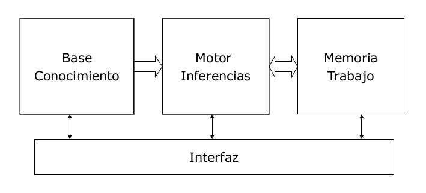

Representación del conocimiento: Introducción (PDF)
Sistemas basados en conocimiento
Son sistemas con una representación explícita y simbólica del conocimiento para resolver un problema. Además, el comportamiento del sistema debe ser consecuencia del contenido de la base del conocimiento. Si usan conocimiento experto, se denominan sistemas expertos.
Un sistema basado en conocimiento es un sistema informático con, al menos, dos componentes estructurales:
- Base de conocimiento: representación explícita y natural del conocimiento del sistema.
- Motor de inferencias: componente de control responsable de utilizar el conocimiento para la solución del problema.
Otros componentes habituales son un editor de conocimiento o un módulo de explicación.

Tipos de conocimiento
Se pueden analizar según varios puntos de vista: biológico, límites de aplicación, niveles o contenidos.
Biológico
- Fisiológico
- Necesario para sobrevivir en el medio.
- Somatizado, sistema nervioso.
- Reaccionar a estímulos, constantes vitales...
- Automatismos
- Consecuencia de la interacción con el medio.
- Requiere aprendizaje.
- Comunicación, equilibrio, reflejos...
- Cortical
- Necesidad de comprender y explicar, curiosidad.
- Gran cantidad de aprendizaje y asimilación de experiencia pasada.
- Elemento característico: lenguaja hablado y escrito.
Límites de aplicación
Dependiente del dominio
Es el conocimiento necesario para resolver un problema concreto y no es extrapolable a otro tipo de problemas.
Incluye datos, hechos, relaciones, criterios de decisión...
Un ejemplo es la diagnosis de enfermedades pulmonares:
- Datos: capacidad pulmonar total, capacidad vital forzada, volumen residual...
- Síntomas: obstrucción moderada de las vías respiratorias.
- Diagnóstico: asma.
- Establece relaciones entre ellos.
Independiente del dominio
Componentes del conocimiento que tienen que ver con la representación, uso y modificación del conocimiento con independencia del contenido del mismo. Es aplicable a clases de problemas.
Un ejemplo sería que si no hay suficientes datos para establecer un diagnóstico, sigue acumulando datos para llegar a una solución.
Niveles
Reune conocimiento del dominio como objetos y relaciones de un dominio particular, junto con metaconocimiento (conocimiento sobre el conocimiento) que permite aplicar de modo efectivo el conocimiento a la resolución de problemas, reconocer las limitaciones del conocimiento o explicar a un observador externo el proceso de solución de un problema.
Nivel-1: Estratégico
- Si con los síntomas disponibles son posibles varios diagnósticos, examinar primero los menos costosos de comprobar.
- Si el paciente es inmunodepresivo, investigar primero infecciones de lugares no estériles.
Contenido (Clancey, 85)
- Heurístico: meras asociaciones entre hechos y conclusiones.
- Estratégico: conocimiento sobre los pasos a seguir para solucionar un problema.
- Estructural: información sobre la estructura del dominio, como jerarquías (taxonomías, parte-de) o componentes e interconexiones.
- Soporte: información relevante para la comprensión del conocimiento de un sistema, como teoría subyaciente, modelos, referencias bibliográficas, justificaciones, autor, fecha, etc.
Tipos de representación
Históricamente encontramos representaciones declarativas ("sabe qué") y representaciones operacionales ("sabe cómo").
- Declarativa: el conocimiento está compuesto por un conjunto de secuencias más procedimientos que las manipulan.
- Operacional: conjunto de procedimientos que permiten resolver el problema.
En la prática: espectro continuo.
Lenguajes de representación de conocimiento
Todo lenguaje de representación del conocimiento (LRC) debe proporcionar:
- Lenguaje de representación con sintaxis y semántica precisa.
- Capacidad de inferencia.
Las principales aproximaciones son:
- Lógica simbólica.
- Sistemas de producción.
- Métodos estructurados como redes semánticas y marcos.
- Actualmente la tendencia son las ontologías.
Es deseable que el lenguaje proporcione representación y gestión de la incertidumbre.
Representación del conocimiento: Lógica y representación del conocimiento (PDF)
Papel de la lógica en la representación del conocimiento
Intuitivamente, la lógica es atractiva como LRC por tener una sintaxis bien definida, una semántica precisa y mecanismos formales de deducción. Sin embargo, presenta dificultades como el problema de la cualificación, la dinámica, la incertidumbre y las creencias.
Problema de la cualificación
El problema de la cualificación se refiere a la limitación de las sentencias cuantificadas universalmente. La sentencia ∀x (Ave(x) ⊃ Vuela(x)) es cierta en algunos dominios pero presenta numerosas excepciones. Añadir estas excepciones (∀x (Ave(x) ∧ ¬Pingüino(x) ⊃ Vuela(x))) es una solución ad hoc que no es generalizable. Este problema no tiene solución en lógica clásica como LPO.
Debate histórico
Históricamente, hay una escuela "logicista" que defiende la inteligencia artificial como la aplicación de la lógica (Nilson, McCarthy) enfrentada a los que defienden la lógica como elemento de análisis pero no de resolución de problemas, al menos los complejos (Misky, Newell).
Cuena [99] defiende que la lógica permite formalizar y mecanizar el razonamiento deductivo, y que permite modelar el conocimiento de un agente con independencia de su implementación.
Tendencia actual
Se usa la lógica como lenguaje de modelado del conocimiento. Se ha desarrollado el concepto de ontología en el ámbito de la representación del conocimiento. Algunas definiciones de ontología son:
- Sistema particular de categorías sistematizando cierta visión del mundo. [Guarino 98]
- Teoría particular de la naturaleza del ser o de la existencia. [Rusell, Norvig 2010]
- Una ontología es una especificación formal de una conceptualización compartida. [Struder 98]
Se usa la lógica para crer ontologías.
2. Principios de ingeniería de conocimiento en lógica de primer orden
La ingeniería del conocimiento es el proceso de construcción de una base de conocimiento. Requiere adquirir el conocimiento, formalizarlo, representarlo e implementarlo.
En un LPO, la formalización proporciona la representación y la implementación.
Un ingeniero del conocimiento es un profesional que desarrolla la base de conocimiento. Requiere conocer suficientemente el dominio, conocer los lenguajes de representación, conocer los mecanismos de inferencia y conocer los aspectos del diseño y la implementación.
El requisito de conocer suficientemente el dominio es posible en dominios sencillos, pero generalmente requiere la colaboración de expertos del dominio y establecer un proceso de adquisición.
Proceso de ingeniería del conocimiento en LPO
Está orientado al dominio y a la tarea (ontología específica del dominio y de la tarea).
Es un proceso iterativo:
- Identificar la tarea. Hay que identificar el rango de cuestiones que la base de conocimiento debe soportar. Por ejemplo, un asistente al diagnóstico podría responder preguntas como "¿qué bombillas lucen?" o "¿qué interruptor está estropeado?". Hay que identificar también los tipos de hechos disponibles para describir instancias específicas del problema. En el asistente al diagnóstico tenemos componentes, conexiones, tensión en los cables...
- Reunir el conocimiento relevante. Puede que el ingeniero del conocimiento sea experto del dominio, pero por lo general hay que trabajar con un experto en un proceso de adquisición del conocimiento. Hay que obtener una descripción informal que permita entender cómo funciona el dominio y apreciar el alcance de la base de conocimiento para hacerse una idea de qué elementos hay que representar. La dificultad de este paso aumenta con la complejidad del dominio de aplicación.
- Elaborar un vocabulario de nombres de predicados, funciones y constantes (a veces erróneamente denominado ontología).
Este vocabulario especifica qué individuos y relaciones existen, pero no sus propiedades e interrelaciones, aunque es fundamental para describirlas posteriormente. En el ejemplo, las bombillas se representan con constantes
L1yL2y las conexiones con el predicadoConnected/2. - Codificar el conocimiento general del dominio.
Hay que elaborar los axiomas del dominio, que proporcionan las propiedades de los elementos de la ontología (en otras palabras, proporciona el significado de los símbolos de la ontología). En el ejemplo del asistente de diagnóstico, se especifica el funcionamiento de las bombillas con el axioma
∀x [(Light(x) ∧ OK(x)) ⊃ (Live(x) ⊃ Lit(x))]y el funcionamiento de las conexiones con∀x ∀y [(Connected(x,y) ∧ Live(y)) ⊃ Live(x)]. - Codificar una descripción de una instancia específica del problema.
Si la ontología es adecuada, se limita a proporcionar un conjunto de sentencias atómicas sobre instancias de conceptos. Juegan un papel similar a los datos de entrada de un programa tradicional pero en este caso, por ejemplo, los proporcionan los sensores de un agente. En el ejemplo del asistente al diagnóstico sería
up(s3). live(outside). ok(l1).. - Plantear preguntas al procedimiento de inferencia y obtener respuestas.
El procedimiento de inferencia usa los axiomas y hechos específicos del problema para derivar hechos que nos interesan. Siguiendo el ejemplo, algunas preguntas pueden ser
∃x Lit(x),∃x Live(x)o∃x ∃y Connected(x,y). - Depurar la base de conocimiento.